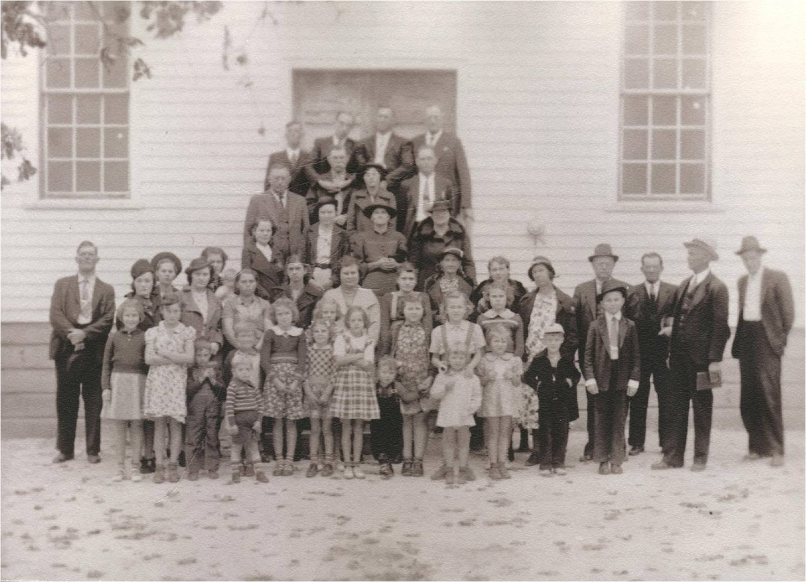
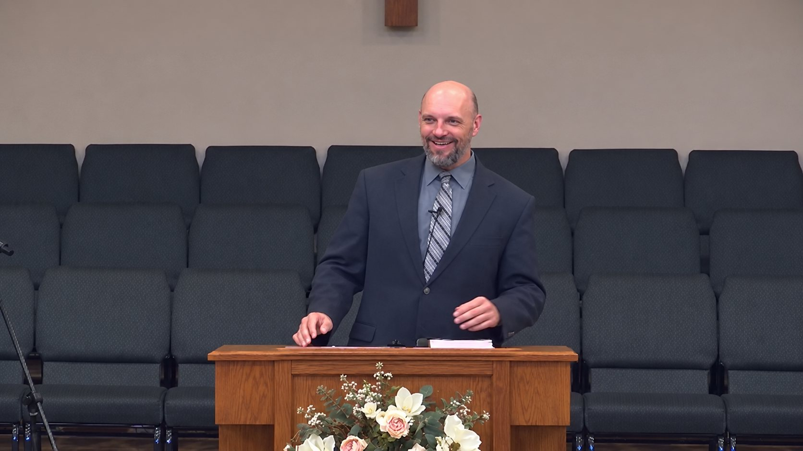
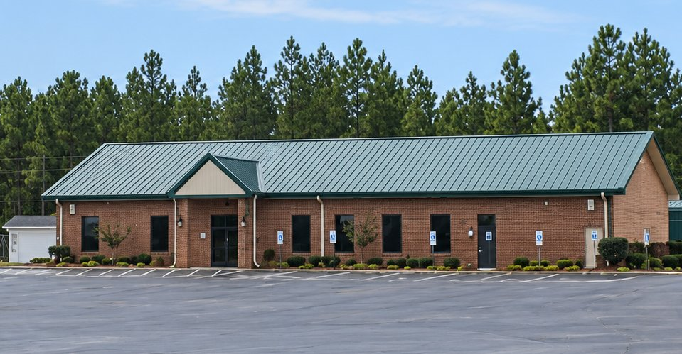
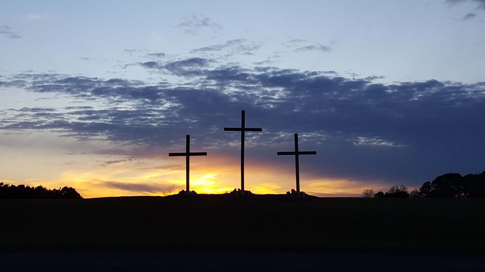

Our Church
Who we are
A Gospel-focused, Bible-preaching Baptist church on Anderson Creek School Road in Spring Lake, North Carolina.
Since 1935
Our history
Originally established in 1935, Layton Chapel Baptist Church is a Gospel-focused, Bible-preaching Baptist church. We are a friendly, family-oriented church that has a strong desire to love our community and to share the Gospel of Christ with everyone we can.
Layton Chapel offers excellent opportunities for learning, growing, and serving. We have small groups for all ages (Sunday School), as well as morning and evening worship services on Sunday.
We are an independent Baptist church, and we preach from the King James Bible.

- Established
1935
- Affiliation
Independent Baptist
- Bible
King James Version
- Pastor
John Chancey
- Where
Spring Lake, North Carolina
Leadership
Meet our pastor

Pastor John Chancey preaches at Layton Chapel each Sunday morning and evening, and teaches on Wednesday nights.
Replace this
Needed from the church: how long Pastor Chancey has served at Layton Chapel, a sentence or two about his family, and a short word of welcome in his own words.
Replace this
Needed from the church: other staff, deacons and ministry leaders to list here, with their roles.
Core values
What we value as a congregation
These nine statements are the church's own, and they describe how Layton Chapel tries to live together.
- LordshipWe value the lordship of our Savior Jesus Christ. We seek to be completely subject to Jesus, who is the Head of the Church. We acknowledge that the tie that binds us together is our common faith in Jesus Christ.
- WorshipWe value worship and believe that worship should be the center of our lives and our community. It is our conviction that human beings were created to bring honor and glory to Him. Through worship we seek to honor God and strengthen the church for its mission.
- God's WordWe value God's Word. We take the Scriptures seriously. It is our guide for belief and living out our faith. We seek to read, study, and thoughtfully interpret scripture as led by the Holy Spirit. We strive to faithfully apply the teachings of Scripture to our lives as individuals and as a congregation. We believe that what Scripture teaches takes precedence over church tradition or human opinion. The Bible is God's "love letter to us" and our desire is that the world see in us a reflection of His love.
- RelationshipsWe value relationships with other believers. We seek to strengthen those relationships by fellowshipping with and caring for each other. The diversity of young and old, married and unmarried and various ethnic cultures strengthens our relationships.
- PrayerWe value prayer and seek to make it central to our lives. We believe prayer and the related practices of fasting, meditation, solitude, and devotional reading are essential to developing an intimate relationship with God.
- Christian serviceWe value Christian service. Whether ordained or layman, we believe all Christians have been given gifts by the Holy Spirit and are called to service in the building of God's kingdom. We strive to equip each member for his or her ministry within the church and community.
- CommunityWe value our community. We seek to be involved in the community surrounding our church building. We will work to create partnerships with people of like faith and practice who are working towards the betterment of the community. The development of these Godly relationships provides unity, shows love, and displays forgiveness among believers.
- ExcellenceWe value excellence. Excellence is an attribute of God. We believe that excellence both honors God and inspires people. God gave us His best, His Son, His only Son; therefore we seek to maintain excellence in all areas of ministry, proclaiming to the world the awe, the wonder and the love of God.
- TeamworkWe value teamwork. The building of God's Kingdom requires a team effort. Every believer possesses natural abilities and spiritual gifts. As we use these talents and gifts for God, we find significance and purpose for our lives. Therefore every member is called to be a minister, sharing these God-given resources for the good of others.
Beyond the values
What we hold to be true
The values above describe how we live together as a congregation. What we believe and teach is set out separately, and so is the Gospel message at the center of it.
Come and see for yourself
Sunday School at 9:45, morning worship at 11:00, evening worship at 6:00. Wednesday Bible study and AWANA at 6:00.
Life at Layton Chapel
Around the church


Replace this
This gallery needs more photographs from the church: the sanctuary from the back, a Sunday service with people in the seats, Sunday School rooms, the fellowship hall, and an AWANA night. Fifteen to twenty-five frames would fill it properly.